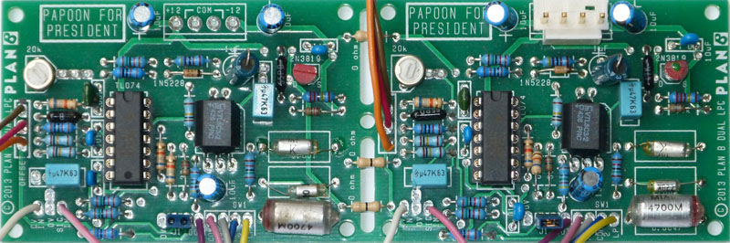
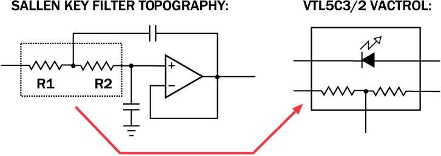
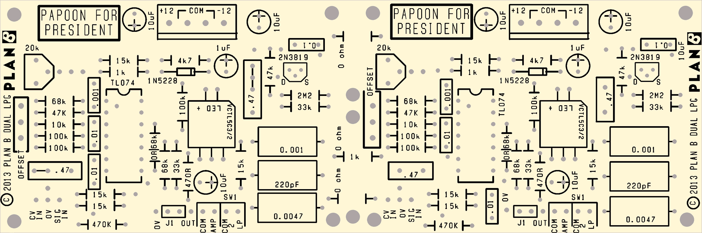
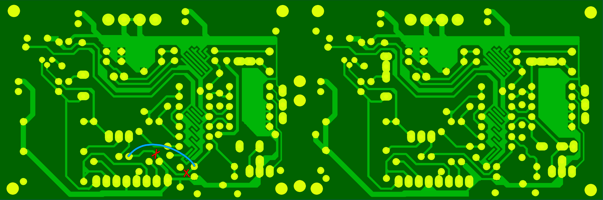
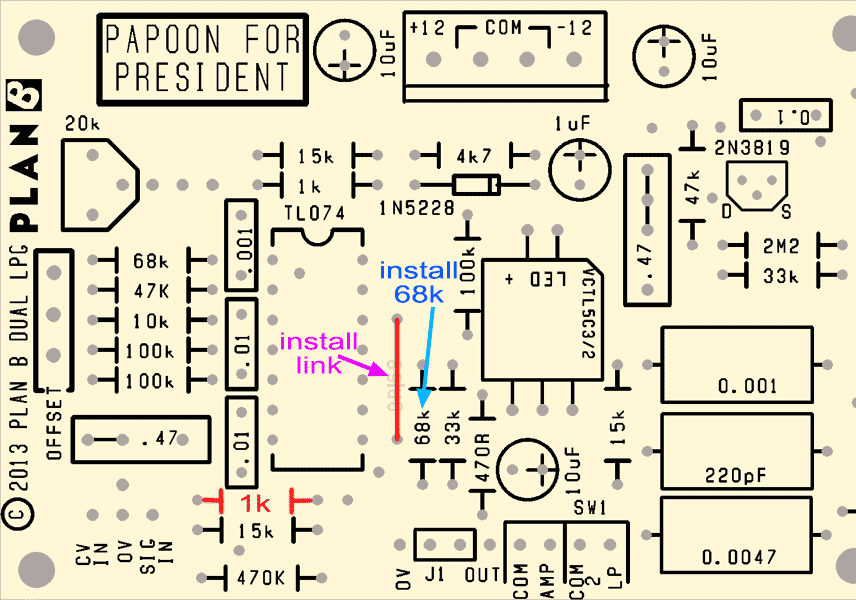
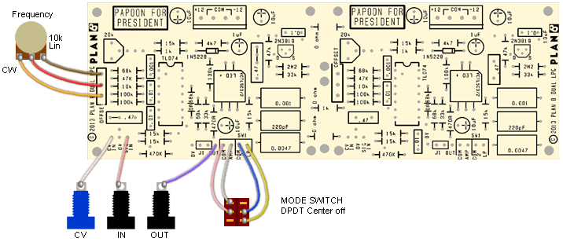

|

Low Pass Gate
for music synthesizers.
This module is a variation on the Classic Buchla Low Pass Gate module developed by Peter Grenader and released here as his gift to the Serge DIY community.
From Electronic Music Wiki:
A lowpass gate is essentially a low pass VCF configured to behave like a VCA. The lowpass gate accepts an audio input and a control signal, in the manner of a VCA. When there is no control signal present, the filter's cutoff frequency is in the subsonic range, well below the audio frequencies; therefore, no audio passes the filter. Applying a control voltage causes the cutoff frequency to rise significantly, into the upper end of the audio range, so that most of the audio at the input now passes. If the output of an envelope generator is presented to the control input, the lowpass gate will shape the note envelope as a VCA would, but with some characteristic differences.
The concept of the lowpass gate originated with the Buchla 200 series modular synthesizer series, which offered a lowpass gate as a module in the series. The Buchla design used a vactrol to process the control voltage input; the vactrol had certain non-linearities which made the lowpass gate a good module for imitating some tuned percussion sounds. By feeding in short bursts of noise, or just impulse spikes, the lowpass gate could be made to produce sounds that resembled hand drums, congas, steel drums, or marimba. The original Buchla module is highly sought after and has inspired a number of imitators over the years.
From Peter Grenader:
By design, the Low Pass Gate is a Sallen Key FIlter. A Sallen Key is a two pole filter topology. It is sometimes called VCVS, or Voltage Controlled Voltage Source. The Sallen Key topology is often seen in a unity gain filter, although the addition of gain resistors is an obvious enhancement. The designer is cautioned, however, that changing the gain also changes other filter characteristics. Like the other single opamp topologies, changing gain will also affect frequency and filter type (Butterworth, Chebyshev, and Bessel).
The Sallen Key topology is suited to operation from a single supply. Current feedback amplifiers can be used, with the restriction that the connection from the op amp output to inverting input must be the recommended feedback resistor value. This is true whether or not this resistor is part of a gain stage. The Sallen Key topology cannot be used with fully differential amplifiers.
Variable center frequency is obtained by changing the value of two resistors simultaneously - R1 and R2 iin standard Sallen Key filter circuit applications. A quick look at the configuration of the VTL5C3/2 vactrol gives a clear analog to this and why it is ideally suited for this application.

Adding the this, the natural tendencies for the VTL5C3/2 Vactrol to attenuate high frequency spectrum information unequally to low frequencies manifests the sought after 'ringing' associated this specific LPG circuit while set in the 'BOTH"mode.
Each LPG here has a 470K Ohm resistor, which was added by me over the original Buchla circuit as part of a feedback loop added which compensates the the 3/2 vactrols only going down to 100 ohms and attenuates the audio bleed associated with that device. You can experiment with values anywhere from 1 meg to 0 ohm (link).
However - the lesser the value, the greater the bleed and the greater the ringing. This is the rub - the more you attenuate the bleed - this can only be heard audibly if you use the LPG in passages where the LPG processed event is the only sound happening - the more you step on the ringing. A suggestion: In latr model Plan B Model 13 Timbral Gates, I would fit one gate with a 470K ohm and omit it the other altogether, yielding a dual personality dual TG.
Please note that these boards can be broken into two piece - two separate PCBS one gate per - suited for non Serge system application where the six inch height my be problematic. When doing this, use a pair of cutters (dikes) to separate the two by cutting the four connecting bridges in the center of the board. Attempting to break the boards with force by itself may not give you the result you want and is not recommended. f you elect to break these in two, the three 0 ohm resistors shown in the component diagram are omitted and each board must be fitted with a four position power connector and the two flanking 10uf filter Caps.
The Low Pass Gate has been specifically designed to process AC signals within the audio bandwidth only. There are two capacitors that govern this: a .047uf capacitor leading to the signal input of the LPG and a single 10uf electrolytic leading to the the vactrol's resistive element (not to be confused with the two 10uf's that flank the power connector). Replacing those two components with a jumper wire or zero ohm resistor will allow for sub audio AC or DC voltage gating but be aware that varying the amplitude of these types of signals via the control input will result in slewing - a portemento effect. The ringing of the the vactrol will also contribute to these types of artifacts. For this reason, this modification may not be particularity useful for music applications outside of providing a DC offset/level with sloppy response.
Finally, the campaign advertisement which appears on this board for Mssr. Papoon was a standing joke between Gary Chang and Kevin Braheny Fortune while they wre both employed at the Serge plant on Santa Monica Blvd in Hollywood, before the company moved to Haight St. in San Fransisco. Legend has it Kevin put a sticker with the same message on Gary's Synth panel while it was being built and it remains in place there to this day, the only graphic on Gary's otherwise infamous graphic-less eight panel instrument.
Enjoy this board! It was my second built project after the Milton Sequencer and a big reason why I began producing modules commercially. For me the sound associated with the LPG is essential in the creation of electronic music via an analog synthesizer!
I extend this board to the synth community free of profit to me. It was my intention to do this as a gesture of heartfelt thanks for the support I've received in recent months from the community since taking care of the debt associated with Plan B's internal problems in the early part of 2009. I only hope that this seemingly inconsequential diligence on my part serves to parallel your generosities. Thank you again and always remember....
Papoon for President!
Construction



Before you start assembly, check the board for etching faults. Look for any shorts between tracks, or open circuits due to over etching. Take this opportunity to sand the edges of the board if needed, removing any splinters or rough edges.
When you are happy with the printed circuit board, construction can proceed as normal, starting with low profile components such as resistors and diodes first, followed by successively taller components.
Take particular care with the orientation of the polarized components, such as ICs, electrolytics, diodes, and transistors.
When inserting the ICs in their sockets, if used, take care not to accidentally bend any of the pins under the chip. Also, make sure the notch on the chip is aligned with the notch marked on the PCB overlay.
The trim pots control how much gain there is in the CV system. Adust them so you get adequate sweep with your system's CV levels.
J1 (present on both gates) affects the ringing and can be installed or omitted per the builder's personal taste.
The board can be split down the center to make two independent PCBs. If using them joined, three links are needed to link the two sides. The power connector can be omitted from one side.
The unit will run on either +/-12 volts or +/-15 volts.
The mode switch selects between VCA mode and Low Pass Gate mode.

|
Example wiring for the Low Pass Gate. The wiring for both parts is identical.
|
Set Up
Each unit has a trimmer that controls how much gain there is in the CV system. Adust them so you get adequate sweep with your system's CV levels.
Notes:
- 330R refers to 330 ohms. 100n = 0.1 uF.
- The module will work on +/-12 volts or +/-15 volts.
- PCB info: 6" x 2" with 3mm mounting holes 0.15" in from the edges.
- Please email me if you find any errors.
| Part | Quantity |
| Capacitors |
|---|
| 220pF styro | 2 |
| 1n (0.001) styro | 2 |
| 4n7 (0.0047) styro | 2 |
| 1n (0.001) | 2 |
| 10n (0.01) | 4 |
| 100n (0.1) | 2 |
| 470n (0.47) | 4 |
| 1uF 25V | 2 |
| 10uF 25V | 6 |
| Resistors (1% metal film) |
|---|
| 470R | 2 |
| 1k | 4 |
| 4k7 | 2 |
| 10k | 2 |
| 15k | 6 |
| 33k | 4 |
| 47k | 4 |
| 68k | 4 |
| 100k | 6 |
| 470k | 2 |
| 2M2 | 2 |
| 20k trimmer | 2 |
| Semi's |
|---|
| 2N3819 | 2 |
| TL074 | 2 |
| VTL5C3/2 Vactrol | 2 |
| 1N5228 | 2 |
| Misc. |
|---|
| Jacks | as needed |
| 10k Lin pot | 2 |
| DPDT Ctr off switch | 2 |
| 2 pin 0.1" header and jumper | 2 |
| 0.156 4 pin connector | 1 |
| LPG PCB | 1 |
|
|
Parts list
This is a guide only. Parts needed will vary with individual constructor's needs.
If anyone is interested in buying these boards, please check the PCBs for Sale page to see if I have any in stock.
Can't find the parts? See the parts FAQ to see if I've already answered the question. Also see the CGS Synth discussion group.
Article, art & design copyright 2011 by Ken Stone
Modular Synth Home Disclaimer
|